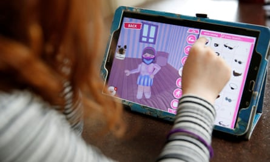

“Deeply disturbing” research exposes how easy it is for children to encounter inappropriate content and interact unsupervised with adults on the gaming platform Roblox.
It comes as parents shared their serious concerns about children experiencing addiction, seeing traumatising content and being approached by strangers on the hugely popular website and app.
Roblox acknowledges that children using the platform may be exposed to harmful content and “bad actors”. It says it is working hard to fix this, but that industry-wide collaboration and government intervention are needed.
Describing itself as “the ultimate virtual universe”, Roblox features millions of games and interactive environments, known collectively as “experiences”. Some of the content is developed by Roblox, but much of it is user-generated. In 2024, the platform had more than 85 million daily active users, an estimated 40% of whom are under 13.
While the company said it “deeply sympathised” with parents whose children came to harm on the platform, it said “tens of millions of people have a positive, enriching and safe experience on Roblox every day”.
However, in an investigation shared with the Guardian , the digital-behaviour experts Revealing Reality discovered “something deeply disturbing … a troubling disconnect between Roblox’s child-friendly appearance and the reality of what children experience on the platform”.
A young Roblox user customises her avatar.Photograph: Phil Noble/Reuters
Revealing Reality created multiple Roblox accounts, registering them to fictional users aged five, nine, 10, 13 and 40-plus. The accounts interacted only with one another, and not with users outside the experiment, to ensure their avatars’ behaviours were not influenced in any way.
Despite new tools launched last week aimed at giving parents more control over their children’s accounts, the researchers concluded: “Safety controls that exist are limited in their effectiveness and there are still significant risks for children on the platform.”
The report found that children as young as five were able to communicate with adults while playing games on the platform, and found examples of adults and children interacting with no effective age verification. This was despite Roblox changing its settings last November so that accounts listed as belonging to under-13s can no longer directly message others outside of games or experiences, instead having access only to public broadcast messages.
The report also found the avatar belonging to the 10-year-old’s account could access “highly suggestive environments”. These included a hotel space where they could view a female avatar wearing fishnet stockings gyrating on a bed and other avatars lying on top of each other in sexually suggestive poses, and a public bathroom space where characters were urinating and avatars could choose fetish accessories to dress up in.
Club role-play hangout open to 10-year-old avatars – video
Researchers found that their test avatars overheard conversations between other players verbalising sexual activity, as well as repeated slurping, kissing and grunting noises, when using the voice chat function. Roblox says that all voice chat – which is available to phone-verified accounts registered as belonging to users aged 13 and above – is subject to real-time AI moderation.
They also found that a test avatar registered to an adult was able to ask for the five-year-old test avatar’s Snapchat details using barely coded language. Though Roblox says in-game text chat is subject to built-in filters and moderation, the report says this is an example of how easily such measures can be circumvented, creating opportunities for predatory behaviour.
Roblox said it recognised “there are bad actors on the internet” but added this was “an issue that goes beyond Roblox and needs to be addressed through collaboration with governments and an industry-wide commitment to strong safety measures across all platforms”.
It also acknowledged that age verification for under-13s “remains an industry challenge”.
Stories shared by parents following a Guardian Community callout include that of a 10-year-old boy who was groomed by an adult he met on the platform, and a nine-year-old girl who started having panic attacks after seeing sexual content while gaming.
Damon De Ionno, the research director of Revealing Reality, said: “The new safety features announced by Roblox last week don’t go far enough. Children can still chat with strangers not on their friends list, and with 6 million experiences [on the platform], often with inaccurate descriptions and ratings, how can parents be expected to moderate?”
The crossbench peer and internet safety campaigner Beeban Kidron said the research exposed the platform’s “systematic failure to keep children safe”, adding: “This kind of user research should be routine for a product like Roblox.”
Matt Kaufman, the chief safety officer at Roblox, said: “Trust and safety are at the core of everything we do. We continually evolve our policies, technologies, and moderation efforts to protect our community, especially young people. This includes investing in advanced safety tools, working closely with experts and empowering parents and caregivers with robust controls and resources.
“In 2024 alone, we added more than 40 new safety enhancements, and we remain fully committed to going further to make Roblox a safe and civil place for everyone .”